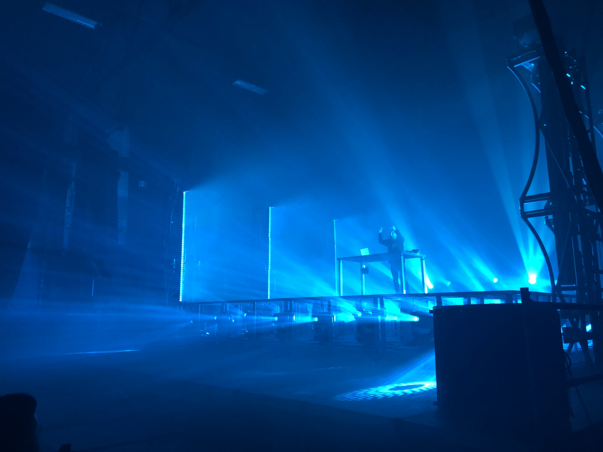

Porter Robinson is an American DJ, Grammy nominated record producer, singer, and musician, from Chapel Hill, North Carolina. He has released multiple number one singles across different electronic genres.
Robinson's early influences include video gaming music, in particular, Dance Dance Revolution. He is a major fan of anime and Japanese culture, and incorporates these elements into his music. He has stated that he originally attempted to emulate the music that he heard in Japanese games, which stemmed to producing, and then to performing as a DJ.
In 2011, he signed a one-EP deal with OWSLA, then a new label operated by Skrillex, to release the eleven-track Spitfire. As the first release on OWSLA, it topped iTunes Dance chart and Beatport's overall chart, crashing the latter's servers upon release.
Robinson released a single, "Language", on April 10, 2012 through Big Beat Records in North America, and Ministry of Sound everywhere else. The song was relatively different in its production than the "complextro" sound that Robinson had become known for, favoring a more melodic sound and a dream-like piano lead. The song rose to the number one overall chart position on Beatport as well as the iTunes Dance chart.

During Robinson's "Language Tour", he continually began to grow tired of the current dance music scene, centered around formulaic songs with timed builds and beat drops, designed to excite people at festivals and clubs. Robinson stated, “The more I forced myself to work within those DJ-friendly limits, the more I resented the genre.” He then spent the next year or so working on a new album and live show, of which he stated, "...when I do change the style of my show into the live thing I'm going to do later this year, I want the shift in focus to be clear."
Porter's debut studio album Worlds was released through Astralwerks and Virgin EMI on August 12, 2014. The album focused more on melodies to invoke a sense of nostalgia, juxtaposing the percussive bass driven tracks he had released previously. Robinson collaborated with multiple vocalists and musical groups including Urban Cone, Lemaitre, Breanne Düren, and Amy Millan. He made his official vocal debut on the single "Sad Machine". The Vocaloid software voice, Avanna, was also used as a vocalist for this single. Robinson then embarked on the Worlds tour, a new live show that involved him singing, playing synthesizers, and triggering samples. The tour headlined popular music festivals, including Ultra Music Festival, EDC, and Coachella.
On August 11, he released "Shelter", a collaboration with fellow musician and friend Hugo Leclercq, better known by his stage name Madeon. An animated music video was released for "Shelter" on October 18, animated by A-1 Pictures and jointly produced by Robinson, A-1 Pictures, and Crunchyroll. Robinson and Leclercq then embarked on a nearly year-long joint international tour dubbed the "Shelter Live Tour", where the two performed live shows onstage together, with supporting acts from Danger, Robotaki, and San Holo.
In October 2017, Robinson began releasing music under his “Virtual Self” alias, a project inspired by late 90s and early 2000s beat games and European techno and hard trance. Elaborate lighting and abstract 3-Dimensional art and cryptic messages are prominent throughout Virtual Self performances and releases.
- Madeon (collaborator, close friend)
- Dillon Francis (collaborator, close friend)
- Zedd (collaborator, friend)
- Skrillex (mentor, friend)
- Mat Zo (collaborator)
- Avicii (official remix)
- Lady Gaga (official remix)
- Nero (official remix)
- M Machine
- Robotaki
- San Holo
- Lemaitre
- Urban Cone
- Worlds, #1 Dance (#18 overall)
- Spitfire, #11 Dance
- Virtual Self, #8 Dance
- Language, #33 Dance
- Easy, #29 Dance
- Sea of Voices, #40 Dance
- Sad Machine, #29 Dance
- Lionhearted, #25 Dance
- Flicker, #34 Dance
- Shelter, #16 Dance
- Unison, #36 Dance
- Divinity, #35 Dance
- Years of War, #50 Dance